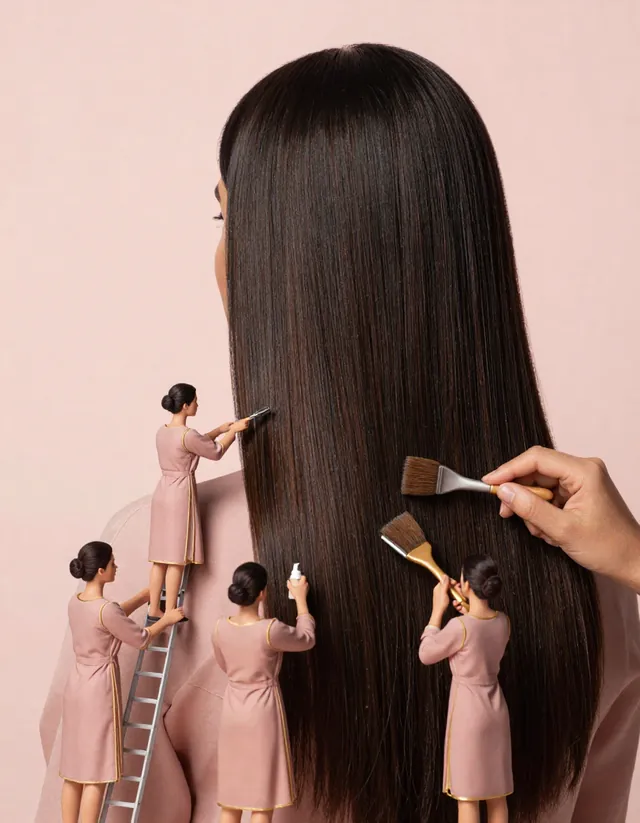

- QAMAR
- Services & areas
- Sleek straight blowout in Dubai
Sleek straight blowout in Dubai
A sleek blowout is the look that survives Dubai best: smooth from root to tip, glossy, and less likely to frizz between the car and the restaurant. At QAMAR it is called Midnight Sleek.

What makes a good sleek blowout
- The roots are dried completely first. Damp roots are where frizz starts.
- The hair is smoothed section by section with a brush, so the shine comes from the blow-dry, not from heavy product.
- A light anti-humidity finish and a cool shot of air seal the shape.
- It fits in about 40 minutes, walk-in, with an all-female team.
| Look | Service | Time | Indicative price |
|---|---|---|---|
| Midnight Sleek | Sleek Straight | 40 min | 169 AED |
| Qamar Glow | Glow Blow-Dry | 40 min | 179 AED |
Sleek blowout or keratin?
A blowout lasts until your next wash, often two to four days if you sleep on silk and stay away from steam rooms. A keratin treatment lasts for months but takes hours and uses chemical products. If you want straight hair for an event or a busy week, a blowout is the simpler choice. QAMAR focuses on blow-dries, not chemical straightening.
Make it last longer
- Skip the gym shower and the sauna on the first day.
- At night, tie your hair loosely with a silk scrunchie.
- On day two, a little dry shampoo at the roots brings back the lift.
- A touch-up within 48 hours is available as an extra (59 AED).
For more tips, read our guide on keeping a blow-dry smooth in Dubai humidity, linked below.
Prices are indicative, in AED, and will be confirmed before opening.
Good to know
- Opening March 2027, off Sheikh Zayed Road (between Mall of the Emirates and DIFC). Exact address announced before opening.
- Women only, all-female team, Arabic and English.
- Walk-in only: no appointment, every look in 45 minutes or less.
- Planned hours: 8 AM to midnight (to be confirmed).
- Prices are indicative, in AED, and confirmed before opening.
Frequently asked questions
How long does a sleek blowout last in Dubai?
Usually two to four days, depending on humidity, your hair type and whether you wash or sweat. Sleek styles hold better in humidity than loose waves.
Is a blowout the same as a blow-dry?
Yes. In Dubai both words describe hair styled with a dryer and brush. A sleek blowout simply means a straight, smooth finish.
How much is a sleek blowout at QAMAR?
Midnight Sleek is 169 AED (indicative), about 40 minutes. Extra long or thick hair adds 40 AED.
Do I need to book?
No. QAMAR is walk-in only, from opening in March 2027.